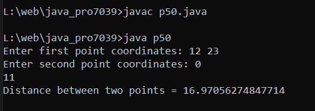

Java Pogram To Find Distance Between Two Points.
Code:-
import java.util.Scanner;
class p50 {
public static void main(String[] args) {
// Scanner class object to read input values
Scanner sc = new Scanner(System.in);
// declare variables
int x1, x2, y1, y2, x, y;
double dist;
// read coordinates from user
System.out.print("Enter first point coordinates: ");
x1 = sc.nextInt();
y1 = sc.nextInt();
System.out.print("Enter second point coordinates: ");
x2 = sc.nextInt();
y2 = sc.nextInt();
// calculate distance
x = x2 - x1;
y = y2 - y1;
dist = Math.sqrt(x * x + y * y);
// print result
System.out.println("Distance between two points = " + dist);
}
}
Output:-

import java.util.Scanner; class p50 { public static void main(String[] args) { // Scanner class object to read input values Scanner sc = new Scanner(System.in); // declare variables int x1, x2, y1, y2, x, y; double dist; // read coordinates from user System.out.print("Enter first point coordinates: "); x1 = sc.nextInt(); y1 = sc.nextInt(); System.out.print("Enter second point coordinates: "); x2 = sc.nextInt(); y2 = sc.nextInt(); // calculate distance x = x2 - x1; y = y2 - y1; dist = Math.sqrt(x * x + y * y); // print result System.out.println("Distance between two points = " + dist); } }